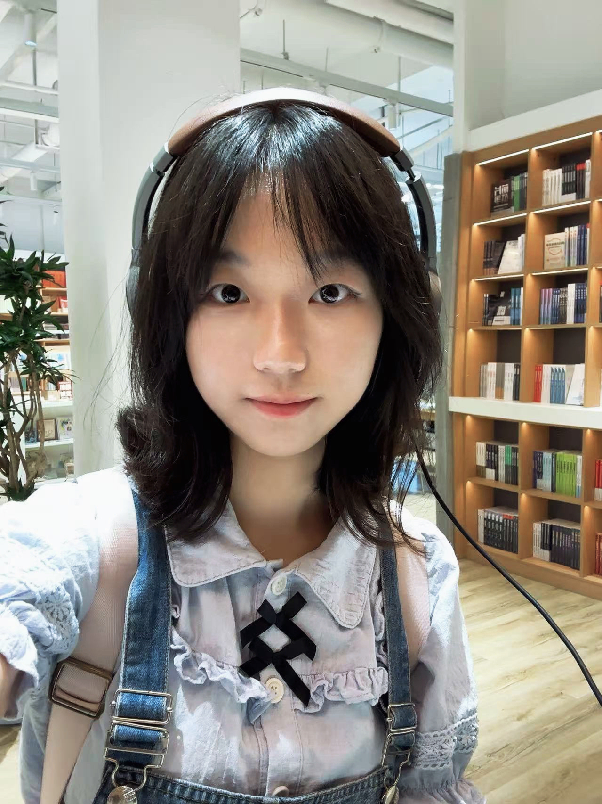

Peking University 北京大学
Expected Sep 2027Incoming PhD student, School of Intelligence Science and Technology
Advisor: Chi Zhang
I am an undergraduate in Intelligent Science and Technology at Fudan University. I will join the School of Intelligence Science and Technology at Peking University as a PhD student in September 2027, advised by Prof. Chi Zhang.
My research interests include agent learning and self-evolution, multi-agent systems, and mechanistic interpretability of large language models.
I am happy to discuss research and potential collaborations. Please feel free to contact me by email.

Incoming PhD student, School of Intelligence Science and Technology
Advisor: Chi Zhang
Undergraduate, Intelligent Science and Technology
Rank: 1/27; GPA: 3.88/4.0
Agent Development Intern
Worked on AI agents for personalized learning and intelligent tutoring at Asksia.
Outside research, I enjoy badminton, detective fiction, and board games. I also like meeting people from different backgrounds. You can find me on RedNote.